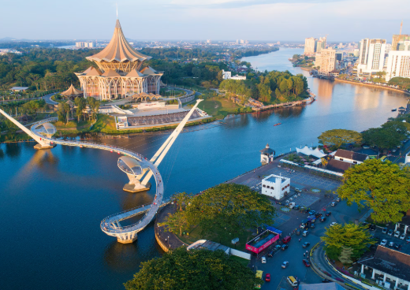

About my Birthday
I was born on September 17, 2001, under the meticulous and analytical sign of Virgo.
About Myself
A passionate and driven individual with a curiosity for technology, creativity, and personal growth.
About my Hometown
Proudly from Kuching, Sarawak, a vibrant city known for its rich culture, stunning landscapes, and warm hospitality.
